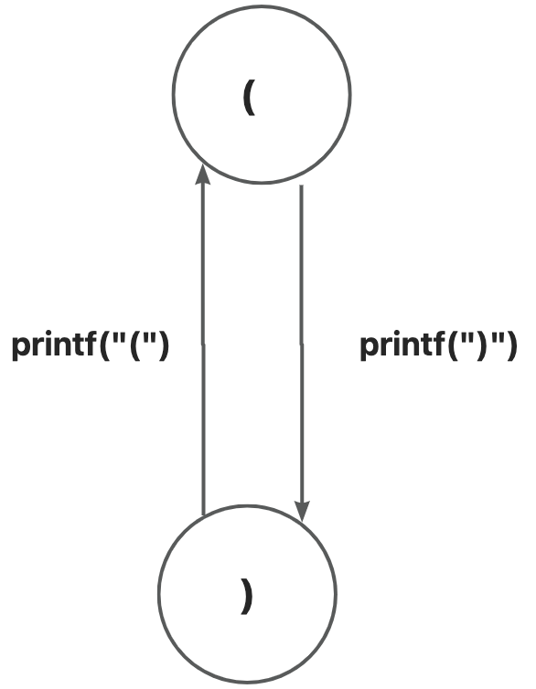

并发导论
左括号,右括号
- 在数据结构那里，我们得到了一个结论---程序就是一个状态机
- 同时,我们也又似乎知道数据结构是用来描述状态或者是状态转移的
- 这跟并发又有什么关系?
- 我们不妨先将打印左括号和右括号这个程序用图的方式表示

左括号,右括号
- 我们是要先打左括号,再打右括号,打完一个右括号,就又能打一个左括号......
- 好像是打印一个左括号就能打印一个右括号,打印一个右括号就能打印一个左括号
- 这好像也是一种顺序,我们似乎可以将这种顺序抽象成先进先出或者先进后出?
- 似乎是可以用栈和队列实现?
- 但我们又想如果我的电脑能同时处理打印左括号,打印右括号两个任务,似乎没啥用
- 还是要遵守顺序,不遵守顺序可能会打印错误的形状
左括号,右括号
- 那还要并发干什么?
- 如果我们将打印左括号这个任务换成处理一个一百万乘一百万的矩阵
- 我们经过计算,发现矩阵中某些数据之间没有状态转换
- 换言之,那些数据不受其他数据的制约，也就是说当一个cpu处理其他数据,这些数据也能被处理
- 似乎并发有了一些意义
左括号,右括号
- 我们还可以更近一步,将并发描述成
- 在原来的状态转移中,找出在某个时刻不受其他状态影响的状态,同时处理这些状态转移

嵌套的左括号,右括号
待填
打印鱼
待填
为什么要并发
待填
如何划分并发任务
待填